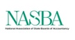
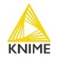
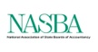
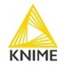

Ashok Narayanan (CIPD, CCAHR)
Dubai - United Arab Emirates

 



A Visionary Leader blending 17+ years of global expertise with cutting-edge Cognitive Frameworks, Behavioural Psychology, Generative AI and AI Ethics to lead innovation in L&D, Leadership/Performance Architecture, Talent Development and OD Evolution. Proficient at driving innovation across multicultural ecosystems, delivering sustainable impact through
Human-centred and Data-driven solutions.
Expertise & Core Competencies
Professional Experience
Head – Learning & Organization Development Jan 2024 – Jul 2025
Senior Manager – Learning & Leadership Development Jun 2013 – Dec 2023
Manager – Training & Development Oct 2010 – Apr 2013
Manager – Learning & Development Feb 2008 – Sep 2010
Training Manager Sep 2006 – Feb 2008
Senior Soft Skills Trainer (Microsoft Research Team – Project) Jul 2005 – Sep 2006
Educational Consultant Jun 2002 – Jul 2005
Education
Master’s Degree in Sociology 2014 – 2016
Bachelor’s Degree in Sociology 1997 – 2000
Licenses & Certifications
Computer Knowledge
- Career Essentials in GitHub Copilot - GitHub Professional Certificate
- Higher Diploma in Software Engineering (HDSE) - APTECH
- LinkedIn Certificates - Microsoft Power BI, SAP S/4HANA, SAP SuccessFactors
- MS Office (Suite) Certified Professional: Word, Excel, PowerPoint (Advanced) - APTECH
- Languages/Stacks: C, C++, C#, Java, HTML, XML, ASP, JSP, Python, FoxPro, Oracle 8i, MySQL, PHP4
Tools
- Project Management: Jira, Microsoft Power BI, Trello, SAP S/4HANA, SaaS (HRM)
- HCM: BambooHR, SAP SuccessFactors, Darwinbox (HRMS), CSOD
- LMS & E‑Learning: Moodle, SAP Enable Now, Canvas, SABA, Docebo
- Assessments: DiSC Workplace, SHL, MBTI tools
Languages (Speak/Read/Write)
Projects
PROJECT 1- Horizon: “Leadership Open House Series” JEF Group
Advancing DEIB, Transparency & Cross‑vertical Trust across 4 Divisions and 5 Locations (India, UAE)
- Launched weekly, monthly & quarterly Open House forums for senior leaders & managers
- Elevated diverse voices; promoted psychological safety and active listening
- Bridged equity gaps, strengthened cross‑cultural understanding and fair decision‑making
- Improved alignment, transparency, upward communication; reduced silos
- Aimed to increase alignment, transparency, and upward communication
- Enhanced trust and broke down silos across verticals
PROJECT 2- JEFSeed: “L&D Academy” JEF Group
Established a dedicated 'Learning Hub' for Technical, AI, Functional, Managerial & Leadership Talent
- Since the organization’s inception, there was no formal L&D function. I was given the opportunity to establish the "Learning & Development Academy", aligning people capability with business vision, for both Tech and Non-Tech domains.
Also Transformed fragmented, ad-hoc training practices into an agile, data-driven ecosystem that addressed 'Internal & External Trainings' requirements through need-based assessments, curated learning journeys, aligned leadership development pathways, and measurable impact across functions
Highlights (L&D Academy Launch):
- Launched a digital-first internal L&D Academy to personalise learning journeys and track real-time progress
- Built a scalable ecosystem integrating LMS, leadership pathways, and capability frameworks across business units
- Developed a Centralised Learning Hub aligned to organizational goals with modules and manager-driven coaching
- Implemented Structured Programs to close skill gaps, enhance onboarding, and build a future-ready workforce
Impact Outcomes:
- Training Engagement ↑ 43% in 11 months; Team Interactions ↑ 36% ; Reducing Training Expenses by ↑ 19%
- Employee Engagement ↑ 21%; Cross‑Functional Collaboration ↑ 33%; Product Sales ↑ 17% Uplift
- Internal Branding visibility ↑ 55%; Tech Trainings (AM & Manager‑led) ↑ 23% ;Tech Services Improvement ↑ 30%
- Learner Satisfaction from 1.2 to 3.3; Leadership Bench Strength ↑ 27%; Retention and Promotions ↑ 10% to 20%
PROJECT 3- Sales Team Excellence JEF Group
Upskilling for Products & Technical Services Teams (Team Size-43)
- Used GenAI for personalized outreach and simulated objection handling
- Enabled personalised outreach by leveraging GenAI to tailor messaging and customer engagement
- Simulated real-time objection handling to sharpen responsiveness and confidence
- Refined pitch delivery using adaptive learning paths based on individual performance and feedback
- Accelerated Sales Growth by enhancing decision-making and strategic agility
- Fostered stronger team connection through collaborative learning and peer feedback loops
- Observed a shift in Team Behaviour marked by proactive engagement and solution-oriented thinking
- Strengthened positive attitude and ownership across sales teams through targeted mindset interventions
- Embedded 'Effective Communication' & 'Internal Team Bonding' practices to enhance empathy, clarity, and impact in client interactions
PROJECT 4- Size & Elevate: Business Units and Unit Heads Acceleration JEF Group
Growth pathway for Building 3 Business Units Six Mid‑level Managers to become Business Units Heads (Technical Services, Product Design and Product Sales)
- Included competency mapping, mentoring, and strategic exposure assignments
- Designed a growth pathway for 6 Mid-level Managers aspiring to become Business Unit Heads
- For 3 Units : Tech Services (International), Product Design and Product Sales (Domestic) - Business Unit Heads
- Integrated Competency Mapping, mentoring, and strategic exposure assignments
- Resulted in visible readiness and stronger Succession Pipeline
PROJECT 5- Structure & Align: Skill Gap Analysis (4 Divisions; 5 Locations) JEF Group
- Mapped current vs. Future skills with assessments and Manager insights.
- Improved Workforce Planning
- Targeted Training and Development
- Optimized Manpower Planning and Recruitment
- Increased Employee Engagement and Performance
- Equip and Enhance Competitiveness
- Enabled Targeted Interventions, Role Clarity, and Capability Planning.
PROJECT 6- The Learning Leap: Presentation Mastery for Senior Leaders (Team 27) JEF Group
- Built narrative framing, data storytelling, stakeholder engagement capabilities
- Included Coaching, Live practice, Peer feedback; Improved clarity & confidence
- Developed and delivered a targeted program to enhance executive communication
- Improved confidence and clarity among senior leaders in high-stakes settings
- Empowered Senior Leaders with high-impact presentation techniques
- Incorporated Personal Coaching(One to One for Senior Management)and Peer Feedback loops
- Strengthened Leadership Visibility and message clarity across Functions
PROJECT 7- Thrive: PMS & Engagement Framework (4 Divisions) JEF Group
- Rolled out a unified Performance Management System with 'The Champions - Engagement Anchors'
- Fostering a culture of Trust, Respect, and Collaboration
- Providing Opportunities for Growth, and a Sense of Purpose
- Ensuring clear Communication and Open Channels
- Recognizing and Rewarding Contributions
- Unified PMS with Anchors; Aligned OKRs, KRAs/KPIs, Feedback loops, Pulse surveys
- Enabled a Culture of Accountability, Recognition, and Continuous feedback
PROJECT 8- PowerSync: PSCAD & ETAP Technical Upgrade JEF Group
Upskilled 21‑member tech team on latest PSCAD & ETAP tools
- Boosted Technical Agility; Reduced system lag by 32%
- Included version Migration
- Simulation Training
- Compliance Validation